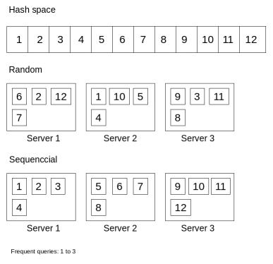
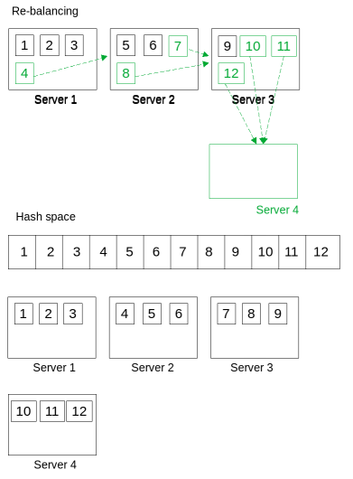
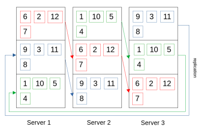
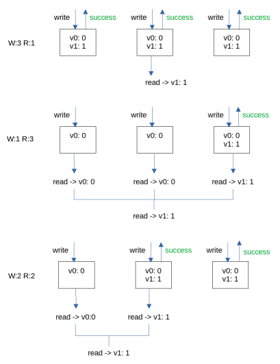
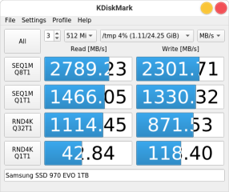
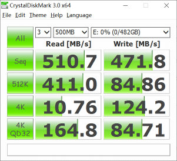
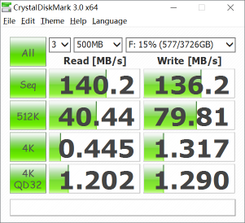

Key Value Store
Hash table is easy to understand in concept. But the key value store, a distributed hash table with high availability requires sophisticated design. The below papers and source code are must-read.
Partition
Uneven distributed queries
Assume the whole hash space is from 1 to 12, and we have 3 servers. Each server randomly picks 4 numbers. The random is important for an evenly distributed load. To the contrary, a sequential assignment may cause a hotspot. It’s because the query isn’t evenly distributed. For example, an app has a lot of queries for today’s data, and less queries for past data. Assume today’s hash map to 1 to 3. Server 1 is heavily loaded in sequential assignment. The load is distributed evenly in the random assignment.

Re-balancing
When the traffic increases, we may want to add more servers, and the mapping from hash space to the physical servers are changed. Each server randomly picks a number, and gives it to the new server, and copies the corresponding data to the new server. The re-balancing process itself is also balanced. All the servers participate, and are responsible for a piece of work. It’s important, because all the servers have to keep the regular jobs, and do the re-balancing in the background. On the other hand, in the sequential assignment, re-balancing may cause some nodes to change a large amount of their hash keys and corresponding data. The re-balancing work may not be done well especially in a high load situation. (Dynamo’s paper mentions the bootstrap issue in section 6.2).
Random Partition

Sequential partition

Replication
Ring
Redundancy is used for fault tolerance. Each hash key has N replicas, hosted by the assigned server and the following server in order.

Trade-off
We want redundancy for fault tolerance, and we want high availability for good performance. We can’t have both of them, and we need a trade-off. We decrease the write time by not waiting for all replicas successed, in exchange, increase the read time by reading more replicas to get the latest version data.
The quorum formula is: W + R > N
Assume N is 3, there’re options:
- 3W + 1R
- 1W + 3R
- 2W + 2R

For high availability, we want to decrease the write time, and also want to decrease the read time. In exchange, we may read stale data, wait for the replication done to get the latest data, which is called eventual consistency.
The sloppy formula is: W + R <= N
Assume N is 3, and we can do 1W + 1R for best performance, but eventual consistency.
Read and Write
Disk sequential read and write are the fastest. The key value store read and write operations can be optimized by disk sequential read and write. SSTable writes the key value pair by appending only to a file, which is sequential write. Later it merges the same keys and writes in order to the file in the background. It also has the index mapping sparse keys to the file location, and then sequentially read to the memory, and do a binary search.
SSD M.2 Disk speed Test

SSD Disk speed Test

HHD Disk speed Test
